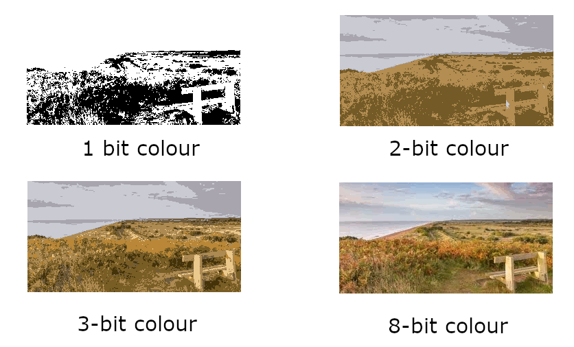

Images
Objectives
- Understand what a pixel is and be able to describe how pixels relate to an image and the way images are displayed.
- Describe how a bitmap represents an image using pixels and colour depth
- Explain the following for bitmaps:
- image
- colour depth
- Describe using examples how the number of pixels and colour depth can affect the file size of a bitmap image
- Calculate storage requirements for bitmapped images and be aware that bitmap image files may also contain metadata.
- Be able to convert binary data into a bitmap image
- Be able to convert binary data into a bitmap image
The storing and processing of images is another important feature of computer systems. The data for the image has to be stored as binary patterns and there are two main methods:
- bit-mapped graphics: data is stored as a grid of elements, each element representing a colour being used
- vector graphics: individual shapes are stored as a set of instructions used to recreate the graphic
For GCSE we only need to know how bitmap is used to represent images.
Bit-mapped graphics
The bitmap, as the name suggests, is a map of bits implying an underlying array structure with rows and columns. At each intersection is a picture element, or pixel which is the smallest identifiable element of an image. The pixel is the building block that builds any image, font, screen that you see. Each pixel will have a single numeric value, this value represents the colour of the pixel.
If an image is opened with any image editing program on the computer and we zoom in on that image the pixels become visible as individual squares, as shown in the following image:

This occurs because the image is being displayed with a lower dots per inch density and is known as pixellation.
Note
Many of the common file formats we use for storing and representing images will use this format including .BMP, .JPG, .PNG though many will also apply sophisticated compression techniques which we'll consider later.
There are two aspects of any bit-mapped image which impact the quality of that image (ignoring any compression for now):
- Resolution (or image size)
- Bit depth (or Colour Depth)
Image Resolution
There are two ways to define the resolution of an image:
- The number of pixels that an image contains per inch, expressed as either pixels per inch (PPI) or dots per inch (DPI). This of also called the pixel density. It specifically refers to the number of pixels per inch in a printed image. The higher the pixel density (a higher PPI or DPI) the sharper the image.
- The total number of pixels in an image. This definition is related to the size of the image file itself. It is calculated by multiplying the number of pixels in the width of the image by those in the height of the image. The greater the number of pixels the better the quality of the image.
Both of these values will impact on how clear of sharp the image will be as well as determining the size of the image when printed.
So, by example, an image with pixel resolution of \(6000 \times 4000\) means the image is \(6000\) pixels wide and \(4000\) pixels high. In total, the image contains \(24,000,000\) pixels or \(24 \text{MP}\). This is a fairly typical resolution used by cameras today (2022)
The final printed size of an image depends on the DPI. If an image has a resolution of \(4500 \times 3000\) pixels the image will print at \(15 \times 10\) inches at 300 DPI. If the DPI was changed to 72 it will use \(62.5 \times 41.6\) inches due to the lower DPI.
Most operating systems can display the resolution of an image, as in the example below (Windows), here by right-clicking on the image and selecting the option 'Properties' from the menu. This is a small image \(311 \times 162\) pixels or \(50,382\) pixels.

In the properties window above is also shown the pixel density, the dots per inch.1
Simplistically one might think of the pixel resolution of the image as an input measurement, and DPI as an output measurement. So, 300 dpi means e.g. the printer will output 300 tiny dots for every inch of the print. Any image can be displayed at any dot density.
Note
The print size has changed but the image itself has not been resized, it's merely reorganised the pixels. The same thing happens when you change the resolution of your monitor, a higher resolution is making each pixel smaller and the smaller the icons, text etc will appear.
Colour Depth
Each pixel represents a colour, each colour will be represented internally by a binary value. The number of bits being allocated to each pixel will determine the colour depth, also known as the bit depth as it tells us how many bits have been used for that colour.
For a monochrome (2-colour) image we only need 1 bit per pixel with \(1\) for black and \(0\) for white:
If we want more colours then we have to increase the number of bits being used to store the value representing the colour. By using 2 bits we know have 4 possible colours:
Note
Remember: \(2^2 = 4\)
Thus, \(8\) bits will provide \(256\) possible colours.
As for all types of binary data, the general formula is that for \(n\) bits you can store \(2^n\) colour codes, so more bits being allocated to each pixel will yield more colours being available and the more photo-realistic will be the final image:

Modern displays will use a combination of red, green and blue to form the colours. Each of these colours can be allocated 8-bits giving 24-bits in total. This amounts to \(2^{24}\) colours (16.7 million possible colours). It is believed the human eye can only distinguish about 10 million colours so this is sufficient and is often known as true colour.
You will also encounter 32-bit colour depth, an extra byte being added. This extra 8 bits is usually used as an alpha or transparency byte, frequently termed as the alpha channel, which adjusts the level of opacity for a pixel when being blended with other colours. This makes the pixel translucent, or "see-through".
Do not get confused between the number of colours and the colour depth. Colour depth is the number of bits allocated to the values representing the colours.
Increasing the colour depth will inevitably lead to a larger file size.
Print quality vs web page quality
Images that are created to be displayed on a web page are typically \(72 dpi\). When printing the image the resolution needs to be higher, and is typically \(300 dpi\).
Calculating file size for an image
There are two measurements to consider:
- resolution of the image, i.e. the number of pixels being used
- the colour depth for each pixel
It's a relatively simple calculation:
\(filesize = (\text{ number of pixels } \times \text{ bits per pixel })\)
Thus, is \(12\) bits are used per pixel in an image \(800\) bits wide and \(600\) bits tall:
- Number of pixels = \(800 \times 600\)
- Colour depth = \(12\)
- Total number of bits = \(800 \times 600 \times 12\) = \(5760000\)
- Total number of bytes = \(5760000 / 8\) = \(720000\) bytes
Note
Many images will use compression to reduce the size of the file
Image metadata
The actual size of the file saved to a disk will be higher than that calculated above. The reason being that along with the data about each individual pixel will be data about the image itself, known as the metadata, and usually stored in the header of a file. The metadata includes image about the the image itself as well as information about how it was produced. Typically this might include e.g.:
- the format of the file
- the dimensions, in pixels
- data information i.e. when created, when last modified etc
- the device used to take the image, and if camera any specific details about aperture size etc
- geographical location
- colour depth used
The properties image above showed the metadata available for that image.
Image processing with Python
To extend some of this theory we can see how to work with images using Python.
Exercise 1: Load and Display an Image
Use a Python library like PIL (Pillow) to load and display an image. You can install Pillow using pip install Pillow. Here's a sample code:
Output from this code:
Exercise 2: Retrieve image resolution
Using the same PIL (Pillow) package we can return the dimensions and resolution of a given image:
Exercise 3: Convert Image to Grayscale
Explore how colors are represented in images by converting the image to grayscale. Grayscale images represent each pixel with a single intensity value (typically from 0 to 255).
Exercise 4: Resize Image
Understand the impact of image resolution by resizing the image. You can use the resize() method from Pillow.
Exercise 5: Flip Image Horizontally or Vertically
Explore how images can be manipulated by flipping them horizontally or vertically.
Output from the previous code:
Exercise 6: Extract Image Channels (RGB)
Explore how color images are represented using the RGB model. Extract and display individual color channels (Red, Green, Blue).
Output from previous code:
Questions
-
The density of pixels in a monitor is measured in dots per inch (DPI) but since it refers to the number of dots that are within a line of one inch of scan, they were discontinued in favor of PPI (pixels per inch). While PPI is the correct term to refer to monitors, the two are often used interchangeably.